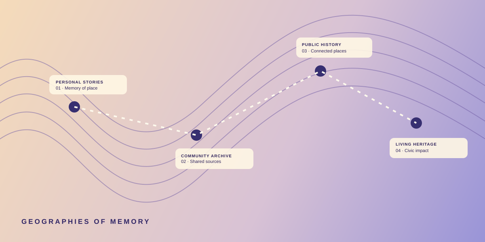

Raccogliere
Documenti, immagini, voci e memorie di comunità.
Un atlante partecipativo dei luoghi, delle fonti e delle storie che abitano l’Europa.
Geographies of Memory è un laboratorio permanente di Public History che esplora i territori come palinsesti storici: luoghi attraversati da persone, trasformazioni, relazioni, conflitti e ricordi.
La metodologia valorizza le memorie quotidiane e le fonti meno visibili: lettere, fotografie familiari, documenti privati, testimonianze orali e archivi di prossimità.
La restituzione può prendere la forma di mappe narrative, podcast, mostre partecipative, itinerari urbani o archivi digitali, sempre nel rispetto delle fonti e delle persone.
Documenti, immagini, voci e memorie di comunità.
Fonti private e pubbliche, luoghi e contesti storici.
Mappe, percorsi, podcast ed esposizioni.
Conoscenza e strumenti a disposizione delle comunità.

Illustrazione editoriale originale, non rappresentazione di un archivio o di una mappa storica reale.
Cerchiamo istituzioni e comunità con cui avviare percorsi di ricerca condivisa.